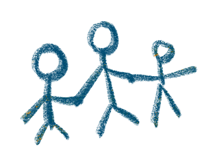

Un toit
Une adresse stable, un lit qui leur appartient, une maison où revenir chaque soir. Pas un couloir entre deux structures, mais un vrai chez-soi.
Public
L'Aide Sociale à l'Enfance protège des milliers d'enfants en France. Mais face à la saturation du système, certains tombent entre les mailles du filet — sans famille d'accueil disponible, sans place en foyer. Ce sont ces enfants que nous accueillons.
Une adresse stable, un lit qui leur appartient, une maison où revenir chaque soir. Pas un couloir entre deux structures, mais un vrai chez-soi.
Les mêmes adultes, chaque jour. Une routine, des règles claires, des visages familiers. La continuité que le système ne peut pas toujours garantir.
L'école, les activités, les moments ordinaires du quotidien. Des journées qui ressemblent à celles des autres enfants — simples, normales, précieuses.
Un projet construit avec eux, pas pour eux. Des adultes qui croient en leur potentiel et les accompagnent vers une vie autonome et digne.
Comment ça marche
La Maison de Redaowsa fonctionne comme une vraie famille. Ce n'est pas un couloir d'hébergement ni une structure froide — c'est une maison, avec une cuisine partagée, des devoirs sur la table, des repas préparés ensemble.
Des permanents de vie formés sont présents 24h/24, 7j/7. Ce sont les mêmes visages, chaque jour. Cette continuité n'est pas un détail — pour des enfants qui ont souvent connu l'instabilité, elle est essentielle.
Notre engagementDémarche de qualité
Mettre l'enfant dans les meilleures conditions possibles pour favoriser sa réussite scolaire, en l'accompagnant dans ses apprentissages et en renforçant sa confiance en lui.
Offrir à l'enfant un espace de sécurité émotionnelle où il se sent écouté, valorisé et aimé, pour construire un attachement stable et épanouissant.
Accompagner l'ensemble du foyer dans les défis du quotidien, en renforçant les liens familiaux et en aidant les parents à exercer leur rôle avec sérénité.
Veiller au bien-être physique et mental de l'enfant en facilitant l'accès aux soins, en promouvant de bonnes habitudes de vie et en assurant un suivi régulier de sa santé.
Partenaires
La Maison de Redaowsa travaille en étroite collaboration avec des acteurs institutionnels, associatifs et privés.
Autorité de tutelle et financement principal via les dotations de placement ASE et contrôle du projet éducatif.
Écoles, orthophonistes, pédopsychiatres, médecins scolaires : un réseau de soins pour chaque enfant.
Besoins
La Maison de Redaowsa ne travaille pas seule. Chaque enfant est entouré d'un réseau d'acteurs institutionnels, éducatifs et médicaux qui collaborent pour construire son projet de vie. Voici qui intervient, et pourquoi.
Juge des enfants
Décide du placement et assure le suivi judiciaire de l'enfant.
ASE / Conseil Départemental
Finance, oriente et contrôle le projet éducatif de chaque enfant placé.
Protection Judiciaire de la Jeunesse
Accompagnement coordonné pour les jeunes sous mandat pénal.
CPAM
Garantit la couverture maladie et l'accès aux soins de chaque enfant.
Éducation Nationale
Scolarisation et suivi de la réussite scolaire de chaque enfant.
SESSAD / IME
Accompagnement spécialisé pour les enfants en situation de handicap.
Psychiatrie infanto-juvénile
Soutien psychologique pour les enfants qui en ont besoin, sans stigma.
Médecin scolaire
Suivi de la santé physique et dépistage des besoins médicaux.
Comment ça marche
À l'arrivée de chaque enfant, une période d'observation de 3 mois permet à l'équipe d'évaluer ses besoins spécifiques — scolaires, affectifs, médicaux. Un projet de vie individualisé est ensuite co-construit avec l'enfant, l'ASE et les partenaires. Ce projet est réévalué régulièrement pour s'adapter à son évolution.
En savoir plusNous maintenons un lien régulier avec les familles, l'ASE et les référents de chaque enfant. Des bilans trimestriels sont partagés avec toutes les parties prenantes. Les parents et tuteurs légaux sont invités à participer à la vie du foyer, dans le respect du cadre judiciaire. Nous croyons que la confiance se construit dans la durée et dans la vérité.
En savoir plus
À propos
Fondatrice & Permanente — La Maison de Redaowsa
« Ces enfants n'ont pas choisi leur histoire. Notre rôle est de leur offrir un présent stable et un avenir possible. »